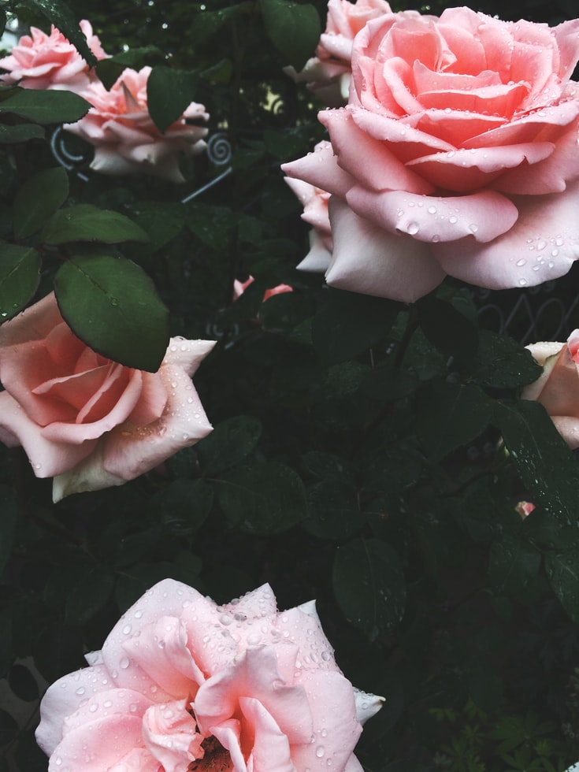

Graphic Design Team Meeting
Brainstorming
Attendence List
Team Leader: Aletha Bishop
Kristia Vaughn
Basil Sydnie
Knox Christabella
Agenda
- Themed Check-ins (15mins)
- Previous Minutes
- Outstandin Information
- Working Team critiques the current models
To-do List
1.Team Introduction
2.Ice Breaker
3.Assign Roles
4.Overview of the Project
 Annoucements
Annoucements
Weekly Meeting
The best way to keep an accurate meeting log is to record the meeting right after it occurs – either in the hallway or on the plane / cab ride back to the office.Senior Design
The first step towards keeping track of your action items is to write a meeting minutes in the first place. After you've collected detailed meeting notes, it's essential to then summarize them in a concise meeting summary.Meeting Log
In your action log, you want to include a description of the meeting task, the person(s) assigned to it, the deadline, and any other items that it is reliant on. Often, there is somewhat of a chain of tasks where one task needs to be completed first before the next person can work on their tasksStarting the following week we will have a special weekly meeting that have three design teams take turn presenting, with the other two teams giving a brief updata, and members of the marketing department joining in to give feedback.
Discussion

Last Week
During the last team meeting, the current team member met with last year's team and the mentors. The PI introduced the current design of the eye tracking system.To encourage the every team member to speak up during the discussion, a solo brainstorm would be placed at the begining of each meeting. Each member needs to write down all of their ideas on post-it notes. The team leader would collect thoes post-its and begin group discussion.
Notes
Recorded Meeting
If the above video does not play, the following audio could be used.
Before you go, remember to fill out the survey for the marketing department.